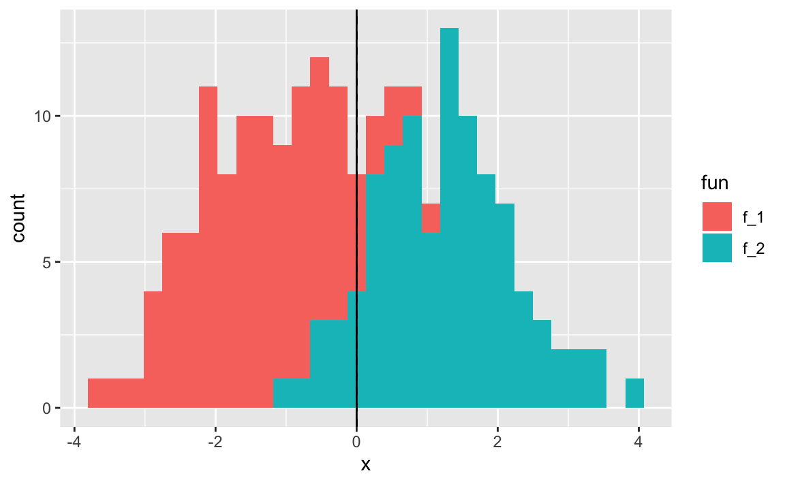

Chapter 4 Classification
4.1 Packages used in this chapter
library(tidyverse)
library(tidymodels)
library(discrim)
library(kknn)
library(knitr)
library(kableExtra)
library(skimr)Linear regression in chapter 3 was concerned with predicting a quantitative response variable. What if the response variable is qualitative? Eye color is an example of a qualitative variable, which takes discrete value such as blue, brown, green. These are also referred to as categorical.
The approach of predicting qualitative responses is known as classification. Often, we predict the probability of the occurences of each category of a qualitative variable, and then make a decision based off of that.
In this chapter we discuss three of the most widely-used classifiers:
We discuss more computer-intensive methods in later chapters.
4.2 An Overview of Classification
Classification is a common scenario.
- Person arrives at ER exhibiting particular symptoms. What illness does he have?
- Money is wired to an external account at a bank. Is this fraud?
- Email is sent to your account. Is it legit, or spam?
Similar to regression, we have a set of training observations that use to build a classifier. We also want the classifier to perform well on both training and test observations.
We will use the dataset ISLR::Default. First, let’s convert it to tidy format.
We are interested in the ability to predict whether an individual will default on their credit card payment, based on their credit card balance and annual income.
If we look at the summary statistics, we see the data is clean, and that very few people default on their balances.
| Name | Piped data |
| Number of rows | 10000 |
| Number of columns | 4 |
| _______________________ | |
| Column type frequency: | |
| factor | 2 |
| numeric | 2 |
| ________________________ | |
| Group variables | None |
Variable type: factor
| skim_variable | n_missing | complete_rate | ordered | n_unique | top_counts |
|---|---|---|---|---|---|
| default | 0 | 1 | FALSE | 2 | No: 9667, Yes: 333 |
| student | 0 | 1 | FALSE | 2 | No: 7056, Yes: 2944 |
Variable type: numeric
| skim_variable | n_missing | complete_rate | mean | sd | p0 | p25 | p50 | p75 | p100 | hist |
|---|---|---|---|---|---|---|---|---|---|---|
| balance | 0 | 1 | 835.37 | 483.71 | 0.00 | 481.73 | 823.64 | 1166.31 | 2654.32 | ▆▇▅▁▁ |
| income | 0 | 1 | 33516.98 | 13336.64 | 771.97 | 21340.46 | 34552.64 | 43807.73 | 73554.23 | ▂▇▇▅▁ |
The scatterplot signals a strong relationship between balance and default.

The boxplot captures the stark difference in balance between those who default and do not.
4.3 Why Not Linear Regression?
Imagine we were trying to predict the medical outcome of a patient on the basis of their symptoms. Let’s say there are three possible diagnoses: stroke, overdose, and seizure. We could encode these into a quantitative variable \(Y\). that takes values from 1 to 3. Using least squares, we could then fit a regression model to predict \(Y\).
Unfortunately, this coding implies an ordering of the outcomes. It also insists that the difference between levels is quantitative, and equivalent across all sequences of levels.
Thus, changing the order of encodings would change relationship among the conditions, producing fundamentally different linear models.
There could be a case where a response variables took on a natural ordering, such as mild, moderate, severe. We would also need to believe that the gap between each level is equivalent. Unfortunately, there is no natural way to convert a qualitative response variable with more than two levels into a quantitative response that is appropriate for linear regression.
For cases of binary qualitative response, we can utilize the dummy variable solution seen in Chapter 3. In this case, the order of the encodings is arbitrary.
Linear regression does work for this binary response scenario. However, it is possible for linear regression to produce estimates outside of the [0, 1] interval, which affects their interpretability as probabilities.
When the qualitative response has more than two levels, we need to use classification methods that are appropriate.
4.4 Logistic Regression
Let’s consider the default dataset. Rather than modeling this response \(Y\) directly, logistic regression models the probability that \(Y\) belongs to a particular category.
If we estimate using linear regression, we see that some estimated probabilities are negative. We are using the tidymodels package.
default <- default %>%
mutate(default_bool = if_else(default == "Yes", 1, 0))
lm_default <- linear_reg() %>%
fit(data = default, default_bool ~ balance)
default %>%
bind_cols(predict(lm_default, default)) %>%
ggplot(aes(x = balance)) +
geom_line(aes(y = .pred)) +
geom_point(aes(y = default_bool, colour = default_bool)) +
guides(colour=FALSE)
Below is the classification using logistic regression, where are probabilities fall between 0 and 1.
logi_default <- logistic_reg(mode = "classification") %>%
fit(data = default, as.factor(default_bool) ~ balance)
default %>%
bind_cols(predict(logi_default, default, type = "prob")) %>%
ggplot(aes(x = balance)) +
geom_line(aes(y = .pred_1)) +
geom_point(aes(y = default_bool, colour = default_bool)) +
guides(colour=FALSE)
Logistic regression in this example is modelling the probability of default, given the value of balance.
Pr(default = Yes|balance)
These values, which we abbreviate as p(balance), range between 0 and 1. Logistic regression will always produce an S-shaped curve. Regardless of the value of \(X\), we will receive a sensible prediction.
From this, we can make a classification prediction for default. Depending how conservative we are, the threshold for this could vary. Depending on the domain and context of the classification, a decision boundary around 0.5 or 0.1 might be appropriate.
4.4.1 The Logistic Model
The problem of using a linear regression model is evident in the chart above, where probabilities can fall below 0 or greater than 1.
To avoid this, we must model \(p(X)\) using a function that gives outputs between 0 and 1 for all values of \(X\). In logistic regression, we use the logistic function,
\(p(X) = \frac{e^{\beta_0+\beta_1X}}{1+e^{\beta_0+\beta_1X}}\)
logistic function
To fit the model, we use a method called maximum likelihood.
If we manipulate the logistic function, we find that
\(\frac{p(X)}{1-p(X)} = e^{\beta_0+\beta_1X}\)
odds
This is called the odds, and takes any value from \(0\) to \(\infty\). This is the same type of odds used in sporting events (“9:1 odds to win this match”, etc). If \(p(X) = 0.9\), then odds are \(\frac{0.9}{1-0.9} = 9\).
If we take the logarithm of the odds, we arrive at
\(log(\frac{p(X)}{1-p(X)}) = \beta_0+\beta_1X\)
log-odds logit
The left-hande side is called the log-odds or logit. The logistic regression model has a logit that is linear in \(X\).
The contrast to linear regression is that increasing \(X\) by one-unit changes the log odds by \(\beta_1\) (or the odds by \(e^{\beta_1}\). However, since \(p(X)\) and \(X\) relationship is not a straight line (see plot above), \(\beta_1\) does not correspond to the the change in \(p(X)\) associated with a one-unit increase in \(X\). The amount that \(p(X)\) changes depends on the current value of \(X\). See how the slope approaches 0 more and more slowly as balance increases.
Regardless of how much \(p(X)\) moves, if \(\beta_1\) is positive then increasing \(X\) will be associated with increasing \(p(X)\). The opposite is also true.
4.4.2 Estimating the Regression Coefficients
The coefficients in the logistic regression equation must be estimated used training data. Linear regression used the least squares approach to estimate the coefficients. It is possible to use non-linear least squares to fit the model, but maximum likelihood is preferred.
Maximum likelihood seeks to to find estimates for \(\beta_0\) and \(\beta_1\) such that the predicted probability \(\hat{p}(x_i)\) of default for each individual corresponds as closely as possible to to the individual’s observed default status. We want estimates that produce low probabilities for individuals who did not default, and high probabilities for those who did.
We can formalize this with a likelihood function:
We can examine the coefficients and other information from our logistic regression model.
## # A tibble: 2 x 5
## term estimate std.error statistic p.value
## <chr> <dbl> <dbl> <dbl> <dbl>
## 1 (Intercept) -10.7 0.361 -29.5 3.62e-191
## 2 balance 0.00550 0.000220 25.0 1.98e-137If we look at the terms of our logistic regression, we see that the coefficient for balance is positive. This means that higher balance increases \(p(Default)\). A one-unit increase in balance will increase the log odds of defaulting by ~0.0055.
The test-statistic also behaves similarly. Coefficients with large statistics indicate evidence against the null hypothesis \(H_0: \beta_1 = 0\). For logistic regression, the null hypothesis implies that \(p(X) = \frac{e^{\beta_0}}{1+e^{\beta_0}}\), which means that the probability of defaulting does not depend on balance.
Given the miniscule p-value associated with our balance coefficient, we can confidently reject \(H_0\). The intercept (\(\beta_0\)) is typically not of interest; it’s main purpose is to adjust the average fitted probabilities to the proportion of ones in the data.
4.4.3 Making Predictions
Once we have the coefficients, we simply compute the probability of default for any given observation.
Let’s take an individual with a balance of $1000. Using our model terms, we can compute the probability. Let’s extract the terms from the model and plug in a balance of $1000.
logi_coef <- logi_default %>%
broom::tidy() %>%
# widen it and clean up names
select(term, estimate) %>%
pivot_wider(names_from = term, values_from = estimate) %>%
janitor::clean_names()
logi_coef %>%
mutate(prob_1000 = exp(intercept + balance * 1000) /
(1 + exp(intercept + balance * 1000)))## # A tibble: 1 x 3
## intercept balance prob_1000
## <dbl> <dbl> <dbl>
## 1 -10.7 0.00550 0.00575We find the probability to be less than 1%.
We can also incorporate qualitative predictors with the logistic regression model. Here we encode student in to the model.
logi_default_student <- logistic_reg(mode = "classification") %>%
fit(data = default, as.factor(default_bool) ~ student)
logi_default_student %>% broom::tidy()## # A tibble: 2 x 5
## term estimate std.error statistic p.value
## <chr> <dbl> <dbl> <dbl> <dbl>
## 1 (Intercept) -3.50 0.0707 -49.6 0
## 2 studentYes 0.405 0.115 3.52 0.000431This model indicates that students have a higher rate of defaulting compared to non-students.
4.4.4 Multiple Logistic Regression
We now consider the scenario of multiple predictors.
We can rewrite \(p(X)\) as
\(p(X) = \frac{e^{\beta_0+\beta_1X_1+...+\beta_pX_p}}{1+e^{\beta_0+\beta_1X_1+...+\beta_pX_p}}\)
/p>
And again use the maximum likelihood method to estimate the coefficients.
Let’s estimate balance using balance, income and student.
multiple_logi_default<- logistic_reg(mode = "classification") %>%
fit(data = default, as.factor(default_bool) ~ balance + student + income)
multiple_logi_default %>% broom::tidy()## # A tibble: 4 x 5
## term estimate std.error statistic p.value
## <chr> <dbl> <dbl> <dbl> <dbl>
## 1 (Intercept) -10.9 0.492 -22.1 4.91e-108
## 2 balance 0.00574 0.000232 24.7 4.22e-135
## 3 studentYes -0.647 0.236 -2.74 6.19e- 3
## 4 income 0.00000303 0.00000820 0.370 7.12e- 1Notice that being a student now decreases the chances of default, whereas in our previous model (which only contained student as a predictor), it increased the chances.
Why is that? This model is showing that, for a fixed value of income and balance, students actually default less. This is because student and balance are correlated.
If we plot the distribution of balance across student, we see that students tend to carry larger credit card balances.
This example illustrates the dangers of drawing insights from single predictor regressions when other predictors may be relevant. The results from using one predictor can be substantially different compared to using multiple predictors. This phenomenon is known as confounding.
4.4.5 Logistic Regression for >2 Response Classes
Sometimes we wish to classify a response variable that has more than two classes. This could be the medical example where a patient outcomes falls into stroke, overdose, and seizure. It is possible to extend the two-class logistic regression model into multiple-class, but this is not used often in practice.
A method that is popular for multi-class classification is discriminant analysis.
4.5 Linear Discriminant Analysis
Logistic regression models the distribution of response \(Y\) given the predictor(s) \(X\). In discriminant analysis, we model the distribution of the predictors \(X\) in each of the response classes, and then use Bayes’ theorem to flip these around into estimates for \(Pr(Y = k|X = x)\).
Why do we need this method?
Well-separated classes produce unstable parameter estimates for logistic regression models
If \(n\) is small and distribution of predictors \(X\) is normall across the classes, the linear discriminant model is more stable than logistic regression
4.5.1 Using Bayes’ Theorem for Classification
Consider the scenario where we want to classify an observation into one of \(K\) classes, where \(K >= 2\).
- Let \(\pi_k\) represent the overall or prior probability that a randomly chosen observation comes from the \(k\)th class
- Let \(f_k(x) = Pr(X = x|Y = k)\) denote the density function of \(X\) for an observation that comes from the \(k\)th class.
In other words, \(f_k(x)\) being large means that there is a high probability that an observation in the \(k\)th class has \(X \approx x\).
We can use Bayes’ theorem
\[ \operatorname{Pr}(Y=k | X=x)=\frac{\pi_{k} f_{k}(x)}{\sum_{l=1}^{K} \pi_{l} f_{l}(x)} \]
And call the left-hand side \(p_k(X)\). We can plug in estimates of \(\pi_k\) and \(f_k(X)\) into Bayes’ theorem above to get the probability of a certain class, given an observation.
- Solving for \(\pi_k\) is easy if we have a random sample of \(Y\)s from the population. We simply calculate the fraction of observations that fall into a \(k\) class.
- Estimating \(f_k(X)\) is more challenging unless we assume simple forms for these densities
We refer to \(p_k(x)\) as the posterior probability that an observation \(X = x\) belongs to the \(k\)th class. This is the probability that the observation belongs to the \(k\)th class, given the predictor value for that observation.
The Bayes’ classifier classifies an observation to the class for which \(p_k(X)\) is largest. If we can find a way to estimate \(f_k(X)\), we can develop a classifier that approximates the Bayes classifier.
4.5.2 Linear Discriminant Analysis for p = 1
Let’s assume we have one predictor. We need to obtain an estimate for \(f_k(x)\) (the density function for \(X\) given a class \(k\)). This will obtain a value for \(p_k(x)\). We will then classify this observation for which \(p_k(x)\) is greatest.
To estimate \(f_k(x)\), we need to make some assumptions about its form.
Let’s assume \(f_k(x)\) is normal or Gaussian. The normal density takes the form
\[ f_{k}(x)=\frac{1}{\sqrt{2 \pi} \sigma_{k}} \exp \left(-\frac{1}{2 \sigma_{k}^{2}}\left(x-\mu_{k}\right)^{2}\right) \]
Plugging this back in to \(p_k(x)\), we obtain
\[ p_{k}(x)=\frac{\pi_{k} \frac{1}{\sqrt{2 \pi} \sigma} \exp \left(-\frac{1}{2 \sigma^{2}}\left(x-\mu_{k}\right)^{2}\right)}{\sum_{l=1}^{K} \pi_{l} \frac{1}{\sqrt{2 \pi} \sigma} \exp \left(-\frac{1}{2 \sigma^{2}}\left(x-\mu_{l}\right)^{2}\right)} \]
Taking the log and rearranging results in
\[ \delta_{k}(x)=x \cdot \frac{\mu_{k}}{\sigma^{2}}-\frac{\mu_{k}^{2}}{2 \sigma^{2}}+\log \left(\pi_{k}\right) \]
In this case, the Bayes decision boundary corresponds to
\[ x=\frac{\mu_{1}^{2}-\mu_{2}^{2}}{2\left(\mu_{1}-\mu_{2}\right)}=\frac{\mu_{1}+\mu_{2}}{2} \]
We can simulate some data to show a simple example.
In this data we have two classes:
- \(\mu_1 = -1.25, \mu_2 = 1.25, \sigma_1^2 = \sigma_2^2 = 1\)
var_1 = 1
var_2 = var_1
f_1 = tibble(fun = "f_1", x = rnorm(n = 10000, mean = -1.25, sd = var_1))
f_2 = tibble(fun = "f_2", x = rnorm(n = 10000, mean = 1.25, sd = var_2))
f_x = bind_rows(f_1, f_2)
# add summary statistics
f_x <- f_x %>%
group_by(fun) %>%
mutate(pi = n(),
var = var(x),
mu = mean(x)) %>%
ungroup() %>%
mutate(pi = pi / n())
decision_boundary <- f_x %>%
group_by(fun) %>%
summarise(mu = mean(x)) %>%
summarise(decision_boundary = sum(mu) / 2) %>%
pull()
f_x %>%
ggplot(aes(x = x, colour = fun)) +
geom_density() +
geom_vline(xintercept = decision_boundary, linetype = "dashed")These two densities overlap, and so given \(X = x\), we still have uncertaintly about which class the observation belongs to. If both classes are equally likely for a random observation \(\pi_1 = \pi_2\), then we see the Bayes classifier assigns the observation to class 1 if \(x < 0\) and class 2 otherwise.
Even if we are sure that \(X\) is drawn from a Gaussian distribution within each class, we still need to estimate \(\mu_1,...,\mu_k\), \(\pi_1,...,\pi_k\), and \(\sigma^2\). The linear discriminant analysis method approximates these by plugging in estimates as follows
\(\hat{\mu}_k = \frac{1}{n_k}\sum_{i:y_i=k}{x_i}\)
*
\(\hat{\sigma}^2 = \frac{1}{n-K}\sum_{k=1}^{K}\sum_{i:y_i=k}{(x_i-\hat{\mu}_k)^2}\)
*
The estimate for \(\hat{\mu}_k\) is the average of all training observations from the \(k\)th class. The estimate for \(\hat{\sigma}^2\) is the weighted average of the sample variances for each of the K classes.
To estimate \(\hat{\pi}_k\), we simply take the proportion of training observations that belong to the \(k\)th class
\(\hat{\pi}_k = n_k/n\)
*
From these estimates, we can achieve a decision boundary
\[ \hat{\delta}_{k}(x)=x \cdot \frac{\hat{\mu}_{k}}{\hat{\sigma}^{2}}-\frac{\hat{\mu}_{k}^{2}}{2 \hat{\sigma}^{2}}+\log \left(\hat{\pi}_{k}\right) \]
This classifier has linear in the name due to the fact that the discriminant function above are linear functions of \(x\).
Let’s take a sample from our earlier distribution and see how it performs.
library(discrim)
f_sample = f_x %>% sample_frac(size = 0.01)
lda_f <- discrim::discrim_linear() %>%
fit(data = f_sample, as.factor(fun) ~ x)
preds <- predict(lda_f, f_sample, type = "class")
f_sample <- f_sample %>% bind_cols(preds)
# TODO figure out how to truly extract decision boundary from MASS::lda
est_decision <- f_sample %>% arrange(x) %>% filter(.pred_class == 'f_2') %>%
slice(1) %>% pull(x)
ggplot(f_sample, aes(x = x, fill = fun)) +
geom_histogram() +
geom_vline(xintercept = est_decision, linetype = "dashed") +
geom_vline(xintercept = 0)
Notice the estimated decision boundary (dashed line) being very close to the Bayes decision boundary.
4.5.2.1 Measuring Performance
4.5.3 Linear Discriminant Analysis for p > 1
We can extend LDA classifier to multiple predictors.
The multivariate Gaussian distribution assumes that each predictor follows a one-dimensional normal distribution, with some correlation between each pair of predictors.
To indicate that a \(p\)-dimensional random variable \(X\) has a multi-variate Gaussian distribution, we write $ X N(, )$
- \(E(X) = \mu\) is the mean of \(X\) (a vector with \(p\) components)
- \(Cov(X) = \Sigma\) is the \(p*p\) covariance matrix of \(X\).
The multivariate Gaussian density is defined as
\[ f(x)=\frac{1}{(2 \pi)^{p / 2}|\mathbf{\Sigma}|^{1 / 2}} \exp \left(-\frac{1}{2}(x-\mu)^{T} \mathbf{\Sigma}^{-1}(x-\mu)\right) \]
In the case of \(p>1\) predictors, the LDA classifier assumes that the observations in the \(k\)th class are drawn from a multivariate Gaussian distribution \(N(\mu_k, \Sigma)\), where \(\mu_k\) is a class-specific mean vector, and \(\Sigma\) is the covariance matrix that is common to all \(K\) classes.
Plugging the density function for the \(k\)th class, \(f_k(X = x)\), into
\[ \operatorname{Pr}(Y=k | X=x)=\frac{\pi_{k} f_{k}(x)}{\sum_{l=1}^{K} \pi_{l} f_{l}(x)} \]
and performing some algebra reveals that the Bayes classifier will assign observation \(X = x\) by identifying the class for which
\[ \delta_{k}(x)=x^{T} \boldsymbol{\Sigma}^{-1} \mu_{k}-\frac{1}{2} \mu_{k}^{T} \boldsymbol{\Sigma}^{-1} \mu_{k}+\log \pi_{k} \]
is largest.
4.5.3.1 Performing LDA on Default data
If we run an LDA model on our default dataset, predicting the probability of default based off of student and balance, we achieve a respectable 3.0% error rate.
set.seed(1)
default_split <- initial_split(default, prop = 3/4)
train_default <- training(default_split)
test_default <- testing(default_split)
lda_default <- discrim::discrim_linear() %>%
fit(data = train_default, default ~ student + balance)
preds <- predict(lda_default, test_default, type = "class")
# error rate
test_default %>%
bind_cols(preds) %>%
metrics(truth = default, estimate = .pred_class)## # A tibble: 2 x 3
## .metric .estimator .estimate
## <chr> <chr> <dbl>
## 1 accuracy binary 0.97
## 2 kap binary 0.369While this may seem impressive, let’s remember that only 3.6% of observations in the dataset end up in default. This means that if we assigned a null classifier, which simply predicted every observation to not end in default, our error rate would be 3.6%. This is worse, but not by much, compared to our LDA error rate.
# null error rate
test_default %>%
group_by(default) %>%
count() %>%
ungroup() %>%
mutate(prop = n / sum(n))## # A tibble: 2 x 3
## default n prop
## <fct> <int> <dbl>
## 1 No 2410 0.964
## 2 Yes 90 0.036Binary decision makers can make to types of errors:
- Incorrectly assigning an individual who defaults to the “no default” category
- Incorrectly assigning an individual who doesn’t default to the “default” category.
We can identify the breakdown by using a confusion matrix
## Truth
## Prediction No Yes
## No 2402 67
## Yes 8 23We see that our LDA only predicted 31 people to default. Of these, 23 actually defaulted. So, only 8 of out of the ~7500 people who did not default were incorrectly labeled.
However, of the 90 people in our test set who defaulted, we only predicted this correctly for 23 of them. That means ~75% of individuals who default were incorrectly classified. Having an error rate this high for the problematic class (those who default) is unacceptable.
Class-specific performance is an important concept. Sensitivity and specificity characterize the performance of a classifier or screening test. In this case, the sensitivity is the percentage of true defaults who are identified (a low ~25%). The specificity is the percentage of non-defaulters who are correctly identified (7492/7500 ~ 99.9%).
Remember that LDA is trying to approximate the Bayes classifier, which has the lowest total error rate out of all classifiers (assuming Gaussian assumption is correct). The classifier will yield the smallest total number of misclassifications, regardless of which class the errors came from. In this credit card scenario, the credit card company might wish to avoid incorrectly misclassifying a user who defaults. In this case, they value sensitivity. For them, the cost of misclassifying a defaulter is higher than the cost of misclassifying a non-defaulter (which they still desire to avoid).
It’s possible to modify LDA for such circumstances. Given the Bayes classifier works by assigning an observation to a class in which the posterior probability \(p_k(X)\) is greatest (in the two-class scenario, this decision boundary is at 0.5), we can modify the probability threshold to suit our needs. If we wish to increase our sensitivity, we can lower this threshold.
Imagine we lowered the threshold to 0.2. Sure, we would classify more people as defaulters than before (decreasing our specificity) but we would also catch more defaulters we previously missed (increasing our sensitivity).
preds <- predict(lda_default, test_default, type = "prob")
# error rate
test_default %>%
bind_cols(preds) %>%
mutate(.pred_class = as.factor(if_else(.pred_Yes > 0.2, "Yes", "No"))) %>%
conf_mat(truth = default, estimate = .pred_class)## Truth
## Prediction No Yes
## No 2357 37
## Yes 53 53Now our sensitivy has increased. Of the 90 people who defaulted, we correctly identified 53, or ~58.8% of them (up from ~25% previously).
This came at a cost, as our specificity decreased. This time, we predicted 106 people to default. Of those, 53 actually defaulted. This means that 53 of the 7500 people who didn’t default were incorrectly labelled. This gives us a specificity of (7447/7500 ~ 99.2%)
Despite the overall increase in error rate, the lower threshold may be chosen, depending on the context of the problem. To make a decision, an extensive amount of domain knowledge is required.
The ROC curve is a popular graphic for displaying the two types of errors for all possible thresholds. “ROC” stands for receiver operating characteristics.
The overall performance of a classifier, summarized over all possible thresholds, is given by the area under the (ROC) curve (AUC). An ideal ROC curve will hug the top left corner. Think of it this way: ideal ROC curves are able to increase sensitivity at a much higher rate than reduction in specificity.
We can use yardstick:: (part of tidymodels::) to plot an ROC curve.
We can think of the sensitivity as the true positive, and 1 - specificity as the false positive.
4.5.4 Quadratic Discriminant Analysis
LDA assumes that the observations within each class are drawn from a multivariate Gaussian distribution, with a class-specific mean vector and a covariance matrix that is common to all \(K\) classes. Quadratic discriminant analysis (QDA) assumes that class has its own covariance matrix.
It assumes that each observation from the \(k\)th class has the form \(X \sim N(\mu_k, \Sigma_k)\), where \(\Sigma_k\) is a covariance matrix for the \(k\)th class. Under this assumption, the Bayes classifier assigns an observation \(X=x\) to the class for which
\[ \begin{aligned} \delta_{k}(x) &=-\frac{1}{2}\left(x-\mu_{k}\right)^{T} \boldsymbol{\Sigma}_{k}^{-1}\left(x-\mu_{k}\right)-\frac{1}{2} \log \left|\boldsymbol{\Sigma}_{k}\right|+\log \pi_{k} \\ &=-\frac{1}{2} x^{T} \boldsymbol{\Sigma}_{k}^{-1} x+x^{T} \boldsymbol{\Sigma}_{k}^{-1} \mu_{k}-\frac{1}{2} \mu_{k}^{T} \boldsymbol{\Sigma}_{k}^{-1} \mu_{k}-\frac{1}{2} \log \left|\boldsymbol{\Sigma}_{k}\right|+\log \pi_{k} \end{aligned} \]
is largest. In this case, we plug in estimates for \(\Sigma_k\), \(\mu_k\), and \(\pi_k\). Notice the quantity \(x\) appears as a quadratic function, hence the name.
So why would one prefer LDA to QDA, or vice-versa? We again approach the bias-variance trade-off. With \(p\) predictors, estimating a class-independent covariance matrix requires estimating \(p(p+1)/2\) parameters. For example, a covariance matrix with 4 predictors would require estimating 4(4+1)/2 = 10 parameters. To estimate a covariance matrix for each class, the number of parameters is \(Kp(p+1)/2\) paramters. With 50 predictors, this becomes some multiple of 1,275, depending on \(K\). The assumption of the common covariance matrix in LDA causes the model to become linear in \(x\), which means there are \(Kp\) linear coefficients to estimate. As a result, LDA is much less flexible clasifier than QDA, and has lower variance.
The consequence of this is that if LDA’s assumption of a common covariance matrix is significantly off, the LDA can suffer from high bias. In general, LDA tends to be a better bet than QDA when there are relatively few training observations and so reduction of variance is crucial. In contrast, with large data sets, QDA can be recommended as the variance of the classifier is not a major concern, or the assumption of a common covariance matrix for the \(K\) classes is clearly not correct.
Breaking the assumption of a common covariance matrix can “curve” the decision boundary, and so the use of a more flexible model (QDA) could yield better results.
4.6 A Comparison of Classification Methods
Let’s discuss the classification methods we have considered and the scenarios for which one might be superior.
- Logistic regression
- LDA
- QDA
- K-nearest neighbors
There is a connection between LDA and logistic regression, particularyly in the two-class setting with \(p=1\) predictor. The difference being that logistic regression estimates coefficients via maximum likelihood, and LDA uses the estimated mean and variance from a normal distribution.
The similarity in fitting procedure means that LDA and logistic regression often give similar results. When the assumption that observations are drawn from a Gaussian distribution with a common covariance matrix in each class are in fact true, the LDA can perform better than logistic regression. If the assumptions are in fact false, logistic regression can outperform LDA.
KNN, on the other hand, is completely non-parametric. KNN looks at observations “closest” to \(x\), and assigns it to the class to which the plurality of these observations belong. No assumptions are made about the shape of the decision boundary. We can expect KNN to outperform both LDA and logistic regression when the decision boundary is highly non-linear. A downside of KNN, even when it does outperform, is its lack of interpretability. KNN does not tell us which predictors are important.
QDA serves as a compromise between the non-parametric KNN method and the linear LDA and logistic regression approaches. The assumption of quadratic decision boundary allows it to accurately model a wider range of problems. It’s reduced flexibility compared to KNN allows it to produce a lower variance with a limited number of training observations due to it making some assumptions about the form of the decision boundary.
4.7 Lab: Logistic Regression, LDA, QDA, and KNN
4.7.1 Churn Dataset
We will be using the modeldata::wa_churn dataset to test our classification techniques.
These data were downloaded from the IBM Watson site (see below) in September 2018. The data contain a factor for whether a customer churned or not. Alternatively, the tenure column presumably contains information on how long the customer has had an account. A survival analysis can be done on this column using the churn outcome as the censoring information. A data dictionary can be found on the source website.Our interest for this dataset is predicting whether a customer will churn or not. If a customer is likely to churn, we can offer them an incentive to stay. These incentives cost us money, so we want to minimize the incentives given out to customers that won’t churn. We will identify a balance between sensitivity and specificity that maximizes the ROI of our incentive.
| Name | Piped data |
| Number of rows | 7043 |
| Number of columns | 20 |
| _______________________ | |
| Column type frequency: | |
| factor | 11 |
| numeric | 9 |
| ________________________ | |
| Group variables | None |
Variable type: factor
| skim_variable | n_missing | complete_rate | ordered | n_unique | top_counts |
|---|---|---|---|---|---|
| churn | 0 | 1 | FALSE | 2 | No: 5174, Yes: 1869 |
| multiple_lines | 0 | 1 | FALSE | 3 | No: 3390, Yes: 2971, No : 682 |
| internet_service | 0 | 1 | FALSE | 3 | Fib: 3096, DSL: 2421, No: 1526 |
| online_security | 0 | 1 | FALSE | 3 | No: 3498, Yes: 2019, No : 1526 |
| online_backup | 0 | 1 | FALSE | 3 | No: 3088, Yes: 2429, No : 1526 |
| device_protection | 0 | 1 | FALSE | 3 | No: 3095, Yes: 2422, No : 1526 |
| tech_support | 0 | 1 | FALSE | 3 | No: 3473, Yes: 2044, No : 1526 |
| streaming_tv | 0 | 1 | FALSE | 3 | No: 2810, Yes: 2707, No : 1526 |
| streaming_movies | 0 | 1 | FALSE | 3 | No: 2785, Yes: 2732, No : 1526 |
| contract | 0 | 1 | FALSE | 3 | Mon: 3875, Two: 1695, One: 1473 |
| payment_method | 0 | 1 | FALSE | 4 | Ele: 2365, Mai: 1612, Ban: 1544, Cre: 1522 |
Variable type: numeric
| skim_variable | n_missing | complete_rate | mean | sd | p0 | p25 | p50 | p75 | p100 | hist |
|---|---|---|---|---|---|---|---|---|---|---|
| female | 0 | 1 | 0.50 | 0.50 | 0.00 | 0.00 | 0.00 | 1.00 | 1.00 | ▇▁▁▁▇ |
| senior_citizen | 0 | 1 | 0.16 | 0.37 | 0.00 | 0.00 | 0.00 | 0.00 | 1.00 | ▇▁▁▁▂ |
| partner | 0 | 1 | 0.48 | 0.50 | 0.00 | 0.00 | 0.00 | 1.00 | 1.00 | ▇▁▁▁▇ |
| dependents | 0 | 1 | 0.30 | 0.46 | 0.00 | 0.00 | 0.00 | 1.00 | 1.00 | ▇▁▁▁▃ |
| tenure | 0 | 1 | 32.37 | 24.56 | 0.00 | 9.00 | 29.00 | 55.00 | 72.00 | ▇▃▃▃▆ |
| phone_service | 0 | 1 | 0.90 | 0.30 | 0.00 | 1.00 | 1.00 | 1.00 | 1.00 | ▁▁▁▁▇ |
| paperless_billing | 0 | 1 | 0.59 | 0.49 | 0.00 | 0.00 | 1.00 | 1.00 | 1.00 | ▆▁▁▁▇ |
| monthly_charges | 0 | 1 | 64.76 | 30.09 | 18.25 | 35.50 | 70.35 | 89.85 | 118.75 | ▇▅▆▇▅ |
| total_charges | 11 | 1 | 2283.30 | 2266.77 | 18.80 | 401.45 | 1397.47 | 3794.74 | 8684.80 | ▇▂▂▂▁ |
The dataset contains 7043 observations and 20 variables. The dataset consists mostly of factor variables, all with a small amount of unique levels. We are going to try out logistic regression, LDA, and K-nearest neighbors on this dataset. For now, we will only remove the 11 observations which have missing values for the total_charges column. We will also reorder the churn column levels so that a “success” corresponds with a customer churning.
wa_churn <- wa_churn %>% filter(!is.na(total_charges)) %>%
mutate(churn = fct_relevel(churn, "No", "Yes"))Now let’s take a look at the response variable.
## # A tibble: 2 x 3
## churn n prop
## <fct> <int> <dbl>
## 1 No 5163 0.734
## 2 Yes 1869 0.266In this dataset, 73.5% of the observations do not churn. There is some skew, but nothing drastic. We will now prepare the data and apply binary classification techniques to see which model performs best.
4.7.2 Logistic Regression
Let’s run a logistic regression to predict churn using the available variables.
Unlike ISLR, we will use the parsnip::logistic_reg function over glm due to its API design and machine learning workflow provided by its parent package, tidymodels. Models in the {parsnip} package also allow for choice of different computational engines. This reduces cognitive overhead by standardizing the high-level arguments for training a model without rembembering the specifications of different engine. In our case, we will be using the glm engine.
logistic_reg() is a way to generate a specification of a model before fitting and allows the model to be created using different packages in R, Stan, keras, or via Spark.logi_churn <- logistic_reg(mode = "classification") %>%
fit(data = train_churn, churn ~ .)
broom::tidy(logi_churn) %>% arrange(p.value)## # A tibble: 24 x 5
## term estimate std.error statistic p.value
## <chr> <dbl> <dbl> <dbl> <dbl>
## 1 tenure -0.0558 0.00702 -7.95 1.81e-15
## 2 contractTwo year -1.42 0.206 -6.87 6.48e-12
## 3 contractOne year -0.655 0.126 -5.21 1.88e- 7
## 4 paperless_billing 0.397 0.0859 4.62 3.87e- 6
## 5 total_charges 0.000288 0.0000800 3.59 3.26e- 4
## 6 online_securityYes -0.533 0.208 -2.56 1.05e- 2
## # … with 18 more rowsThe model shows that the smallest p-value is associated with tenure and contract. This makes sense, as users locked into contracts will have a tougher time cancelling their service. We can interpret the negative coefficients as reducing the chance a customer churns. Notice how customers that utilize paperless_billing and electronic payment_method exhibit higher likelihood to churn. They are probably more tech-savvy, younger, and more likely to research other options.
4.7.2.1 Measuring model performance
We can use the predict() function with our {tidymodels} workflow. The type parameter specifies whether we want probabilities or classifications returned. The object returned is a tibble with columns of the predicted probability of the observation being in each class.
Specifying type = "class" will generate classification predictions based off of a 0.5 threshold (this might not be optimal for the problem).
Let’s add them to our test set.
This adds a column, .pred_class at each observation.
We can produce a confusion matrix using conf_mat() function of the {yardstick} package (used for measuring model performance, also part of {tidymodels}).
We tell conf_mat() that the direction column is our source of truth, and our classifications are contained in the .pred_class column.
## Truth
## Prediction No Yes
## No 1156 208
## Yes 142 252conf_mat objects also have a summary() method that computes various classification metrics.
## # A tibble: 3 x 3
## .metric .estimator .estimate
## <chr> <chr> <dbl>
## 1 accuracy binary 0.801
## 2 sens binary 0.891
## 3 spec binary 0.548Our overall accuracy is around ~80.1%. This may seem high, but if we look at the original dataset, the data is skewed. A naive classifier would produce a 73.5% accuracy (the proportion of yes/no churn values).Still, it suggests that we are better off than randomly guessing.
Can we account for the skew of data when assessing our model? If we utilize the yardstick::metrics() function on our test data fitted with class predictions, we can get a dataframe containing overall model performance.
## # A tibble: 2 x 3
## .metric .estimator .estimate
## <chr> <chr> <dbl>
## 1 accuracy binary 0.801
## 2 kap binary 0.460Notice the metric of kap. The Kappa statistic compares an observed accuracy with expected accuracy (random chance). This controls for the skewness of our model by comparing our model’s accuracy with the naive classifier. In this case, our kap of 0.460 indicates that our model is 46% better than the naive classifier.
We will be using kap to evaluate how our logistic regression fits to other techniques.
4.7.3 Linear discriminant analysis
Calling the parsnip:: model object gives us information about the model fit. We can see the prior probabilities as well as the coefficients of linear discriminants. These provide the linear combination of the variables used to create the decision rule. If the combination is large, the model will predict an increase.
## # A tibble: 30 x 2
## term LD1
## <chr> <dbl>
## 1 contractOne year -0.519
## 2 online_securityYes -0.422
## 3 contractTwo year -0.362
## 4 tech_supportYes -0.285
## 5 phone_service -0.220
## 6 online_backupYes -0.209
## # … with 24 more rowsWe see similar important terms as the logistic regression model. Customers on long contracts are less likely to churn.
lda_preds <- predict(lda_churn, test_churn, type = "class")
test_churn %>%
bind_cols(lda_preds) %>%
metrics(truth = churn, estimate = .pred_class)## # A tibble: 2 x 3
## .metric .estimator .estimate
## <chr> <chr> <dbl>
## 1 accuracy binary 0.787
## 2 kap binary 0.429Here we achieve a kap of 42.9%.
4.7.4 K-Nearest Neighbors
Next, we will utilize the parsnip::nearest_neighbor() function.
set.seed(40)
knn_churn <- nearest_neighbor(mode = "classification") %>%
fit(data = train_churn, churn ~ .)
knn_preds <- predict(object = knn_churn, new_data = test_churn)
test_churn %>%
bind_cols(knn_preds) %>%
metrics(truth = churn, estimate = .pred_class)## # A tibble: 2 x 3
## .metric .estimator .estimate
## <chr> <chr> <dbl>
## 1 accuracy binary 0.745
## 2 kap binary 0.341K-nearest neighbors performs much worse, with a kap of 34.1%.
KNN’s poor performance is most likely due to the predictor variables and true decision boundary not being highly non-linear. In this case, KNN’s flexibility doesn’t match the shape of the data.
4.7.5 Choosing the model
Given logistic regression and LDA exhibiting similar performance metrics, we could use either model. However, logistic regression makes less assumptions about the underlying data.
Let’s take a look at the ROC curve using yardstick::roc_curve() function.
# https://stats.stackexchange.com/questions/188416/discriminant-analysis-vs-logistic-regression
logi_preds <- predict(logi_churn, test_churn, type = "prob")
test_churn %>%
bind_cols(logi_preds) %>%
roc_curve(churn, .pred_Yes) %>%
autoplot()Our sensitivity (ability to correctly identify those who will churn) has two visible inflection points where the slope changes, one around ~55% and the other around ~80%. What should we pick as our classifier threshold?
4.7.6 Evaluating the threshold
Choosing a classification threshold greatly depends on the problem context.
Imagine we want to hand out an incentive to customers we believe will churn. This incentive costs us money, but has a 100% success rate of retaining a customer (turning them from a Yes to No churn).
Let’s assume the cost of this incentive for us is $75, but the value of retaining the user is $150. We want to maximize the return we get from this incentive.
In this case, every true positive will net us $75 of profit, and every false positive will cost us $75 (the customer doesn’t churn, so giving the incentive was a waste). We want to find the optimal decision boundary where we maximize our return from this incentive.
ltv = 150
incentive = 75
logi_class <- predict(logi_churn, test_churn, type = "class")
costs <- test_churn %>%
bind_cols(logi_preds) %>%
bind_cols(logi_class) %>%
roc_curve(churn, .pred_Yes) %>%
mutate(profit = sensitivity * (ltv - incentive),
cost = (1 - specificity) * incentive,
net = profit - cost)
costs %>%
ggplot(aes(x = sensitivity, y = net)) +
geom_line() +
geom_line(aes(y = max(net)))We can grab the optimal sensitivity and find the corresponding decision threshold.
## # A tibble: 1 x 6
## .threshold specificity sensitivity profit cost net
## <dbl> <dbl> <dbl> <dbl> <dbl> <dbl>
## 1 0.308 0.757 0.764 57.3 18.3 39.1We find that our ideal sensitivity of 76.4% corresponds with a specificity of 75.7%. For whatever reason, roc_curve() gives the .threshold column the predicted No churn class (despite specifying an ROC curve with .pred_Yes column). Thus, if we eastimate a customer to have a churn percentage greater or equal to 1 - 0.308 = 0.692, we can offer them this incentive.
yes_threshold <- 1 - (optimal_sens$.threshold)
test_churn %>%
bind_cols(logi_preds) %>%
filter(.pred_Yes >= yes_threshold) %>%
group_by(churn) %>% tally() %>%
mutate(revenue = if_else(churn == "No", n * -incentive, n * (ltv - incentive)))## # A tibble: 2 x 3
## churn n revenue
## <fct> <int> <dbl>
## 1 No 39 -2925
## 2 Yes 103 7725This incentive program will cost us ~$23k through false positives (handing out incentives to customers that won’t churn), but will net us ~$26k in revenue from true positives. It’s a gross oversimplification, but we expect this program to yield us ~11% profit margin.
4.8 Conclusion
We demonstrated how a classification model could be used to solve a real-world problem in which we want to maximize the value of sending incentives to customers that are likely to churn.